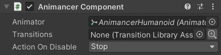
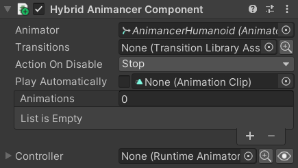
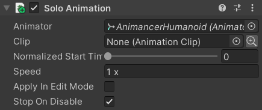
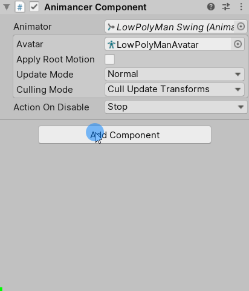

The AnimancerComponent is the main entry point for controlling animations with Animancer. It also has several sub-classes with additional functionality.
| Type / Examples / Description | Inspector |
|---|---|
The base component which wraps the core functionality of Animancer. It is basically just a wrapper wround an Animator component and the internal AnimancerPlayable where all the magic happens. |
 |
Also has an Animations array and Play Automatically toggle in the Inspector and registers animations by name so you can refer to them using strings, much like Unity's Legacy Animation component. |
 |
Has an Animator Controller and most of the same functions that are normally found on an |
 |
Plays one animation which can be assigned in the Inspector without the performance overhead of the rest of Animancer. That is all it does. It does not support Fading or Layers or Animancer Events or any of the other features of Animancer. It is not even really part of Animancer, it is just a self-contained script designed to play that one animation and nothing else. If you want to do anything more than that you are likely better off using a proper AnimancerComponent. |
 |
When using the Add Component menu in the Unity Editor, all Animancer components are located in the Animancer sub-menu.
These components are located in the Assets/Plugins/Animancer folder and they are even included in Animancer Lite, so you can modify or Inherit from them to implement your own variations. For example:
- Inherit from
AnimancerComponentand add aSpriteRendererorSkinnedMeshRendererfield so you can reference it alongside the animations. - Make a
CharacterAnimationSetclass which inherits fromScriptableObjectto define a set of animations for each character and then make aCharacterAnimancerclass which inherits fromAnimancerComponentto allow a character to reference one of those animation sets in the same place as the rest of the animation functionality. - Inherit from
NamedAnimancerComponentand add an array ofstrings so that you can specify a custom name for each animation rather than always using the exactAnimationClip.name. - Inherit from
AnimancerComponentand add someAnimationEventReceivers to listen for certain Animation Events.
Changing Components
You can easily change which type of AnimancerComponent you are using by simply adding a component of the new type to the same object (using the Unity Editor, not using a script).

- Any custom class you make that Inherits from
AnimancerComponentwill also inherit this feature. - This uses a serialization trick to have the Unity Editor change the old component's type and immediately destroy the newly added component which allows it to retain the values of all its fields that are shared by both types (such as the
Animatorreference) and any references to that component from elsewhere will also be retained (if possible based on the types involved). - This feature is implemented by calling
AnimancerUtilities.IfMultiComponentThenChangeTypeinAnimancerComponent.Reset, so you can use it in your own scripts by calling that method.
Animator Members
The AnimancerComponent.Animator property allows you to access the Animator component directly if you need to, however many of its members do not work with Animancer (in most cases they are simply not relevant).
The following members work normally:
- Root Motion:
angularVelocity,ApplyBuiltinRootMotion,applyRootMotion,bodyPosition,bodyRotation,deltaPosition,deltaRotation,gravityWeight,hasRootMotion,isHuman,pivotPosition,rootPosition,rootRotation,velocity avatar,humanScale,isOptimizablecullingMode,updateModefireEvents- Bone Transforms:
GetBoneTransform,hasTransformHierarchy,SetBoneLocalRotation - Inverse Kinematics:
GetIKHintPosition,GetIKHintPositionWeight,GetIKPosition,GetIKPositionWeight,GetIKRotation,GetIKRotationWeight,leftFeetBottomHeight,pivotPosition,pivotWeight,rightFeetBottomHeight,SetIKHintPosition,SetIKHintPositionWeight,SetIKPosition,SetIKPositionWeight,SetIKRotation,SetIKRotationWeight,SetLookAtPosition,SetLookAtWeight,SetTarget,targetPosition,targetRotation isInitializedhasBoundPlayables,playableGraphRebindStringToHash- Works, but serves no purpose since Animancer doesn't rely on hash codes.
The following members do not work directly:
| Animator Members | Details / Alternative |
|---|---|
CrossFade, CrossFadeInFixedTime, Play, PlayInFixedTime |
Use AnimancerComponent.Play. |
GetAnimatorTransitionInfo, GetBehaviour, GetBehaviours, GetCurrentAnimatorClipInfo, GetCurrentAnimatorClipInfoCount, GetCurrentAnimatorStateInfo, GetNextAnimatorClipInfo, GetNextAnimatorClipInfo, GetNextAnimatorClipInfoCount, GetNextAnimatorStateInfo, HasState, IsInTransition |
AnimancerComponent.States allows you to access the details of any State that has been registered with a Key. Play also returns the state of the animation it starts. |
GetBool, GetFloat, GetInteger, GetParameter, IsParameterControlledByCurve, parameters, parameterCount, ResetTrigger, SetBool, SetFloat, SetInteger, SetTrigger |
Animancer does not use parameters. Though if you are playing an Animator Controller using a Controller State you can access its parameters via its Playable. |
GetLayerIndex, GetLayerName, GetLayerWeight, layerCount, layersAffectMassCenter, SetLayerWeight |
AnimancerComponent.Layers gives you access to the details of all Layers. |
keepAnimatorControllerStateOnDisable |
Use AnimancerComponent.StopOnDisable instead. |
linearVelocityBlending |
Does not work properly anyway, but Mixers can usually achieve linear blending by disabling Synchronisation on any non-locomotion states (such as Idle or Attack) when blending them with locomotion states (such as Walk or Run). |
runtimeAnimatorController |
Technically works, but the output from the controller gets overridden by Animancer. Use a HybridAnimancerComponent as demonstrated in the Hybrid Basics example. |
speed |
Use AnimancerPlayable.Speed instead. Though you will usually only want to modify the speed of a single animation using AnimancerNode.Speed. |
Update |
Use AnimancerComponent.Evaluate. |
MatchTarget, InterruptMatchTarget, isMatchingTarget |
No direct equivalent. Using a curve to control Inverse Kinematics may help. |
It is unknown whether or not the following members work: (please email animancer@kybernetik.com.au if you can confirm what these members are actually supposed to do so they can be tested):
feetPivotActivelogWarnings- Animation Recording:
playbackTime,recorderMode,recorderStartTime,recorderStopTime,StartRecording,StartRecording,StopPlayback,StopRecording- Probably works, but not tested.